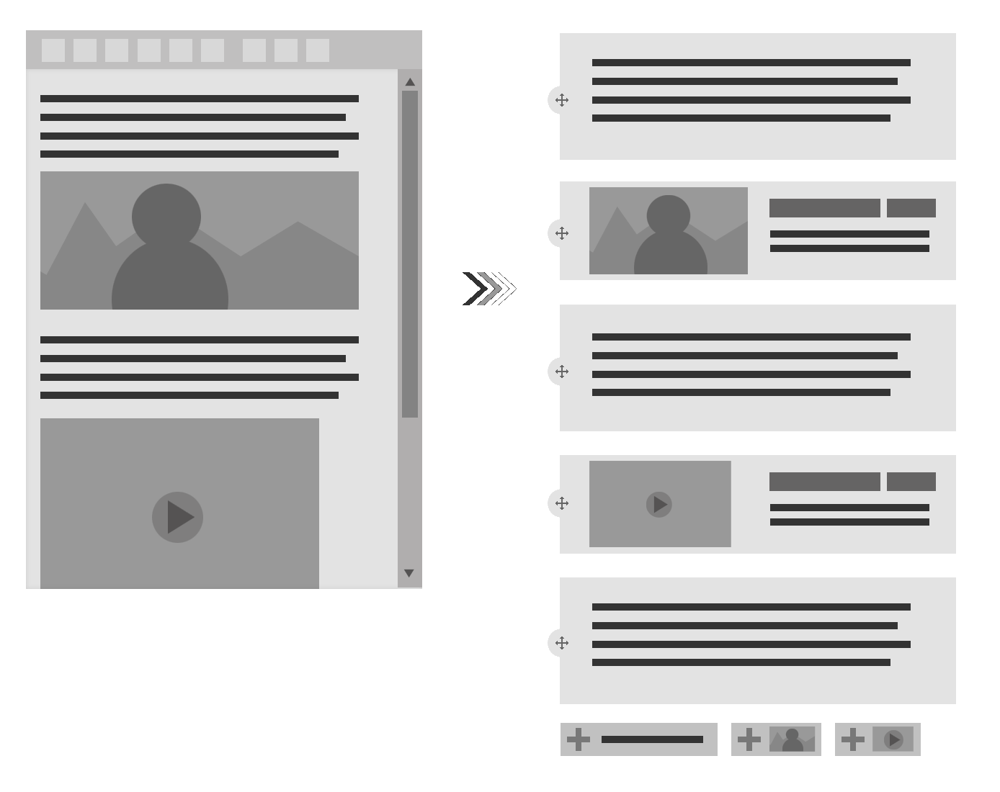

Paragraphs
Le module paragraphs par l'exemple,
ou la rédaction de contenu sous stéroides
Présentation
|
Oliver Pierre / opi Freelance Drupal - olivierpierre.net |
Fabrice Scoyer Freelance Drupal - www.flocondetoile.fr |
Introduction
- drupal.org/project/paragraphs
- C'est quoi paragraphs / a quoi ca sert ?
- Pourquoi cette conférence ? ce module nous semble trop méconnu et sous utilisé
La génèse sur #drupal-fr
(13:27:41) opi> J'ai presque envie de proposer une conférence sur le module *paragraphs*, en mode retour d'xp, exemple de ce qu'on peut faire de foufou avec paragraph ; ca tenterai quelqu'un de la faire avec moi ? (en mode a l'arrache, cela va sans dire) (13:30:33) flocondetoile> opi: partant (13:32:15) opi> cool
Avantages de paragraphs
- Réutilisation de composants
- Composition riche de pages complexes
- Atomic design !!!
- Support des révisions / multilinguisme
Conception modulaire
Inconvénients
Y en pas !
Ou un tout petit peu ;-)
- Les champs d'un paragraph mixent contenus et configuration
- Multiplication des champs et des tables dans la bdd (penser aux configurations communes)
- UI/UX peut être confuse
- On ne peut pas connaître à l'avance quels paragraphes sont disponibles sur un contenu (SEO, Page listing, etc.)
Soigner le backoffice !
Article / Page immersive
Un exemple de page fait avec un seul type de paragraphe
Un grand pouvoir implique de grandes responsabilités
Maître GimsUn grand pouvoir implique...
...de grandes responsabilités
Titre
Texte
Media
Image
Liens avancés
Liens avancés
Section Image + Texte
Texte + image en arrière-plan
Texte + image à droite
Texte + image droite / gauche
Conteneur
Conteneur
+ Texte / Image au-dessus
Liste à puces avec pictos
Liste à puces avec pictos
Séparateur
Vidéo
Vidéo (avec conteneur)
Chiffres défilants / barres de progression
Chiffres défilants / barres de progression
Block reference
Ecrire son propre paragraph
- Beaucoup de clics
- Un zeste de code
- Magic CSS :

Du site building
Un zeste de code (image arrière-plan)
function MON_MODULE_preprocess_paragraph(&$variables) {
// Overlay / background.
$variables['overlay_color'] = FALSE;
if ($paragraph->hasField('field_paragraph_overlay')) {
if ($overlay_color = $paragraph->field_paragraph_overlay->value) {
$variables['overlay_color'] = ['#plain_text' => $overlay_color];
}
}
}
{% block paragraph %}
<div{{ attributes.addClass(classes) }}>
{% block content %}
...
{% if overlay_color %}
<div class="paragraph-overlay"
style="background-color: {{ overlay_color }};"></div>
{% endif %}
...
{% endblock %}
</div>
{% endblock paragraph %}
Magic CSS
.paragraph-overlay {
position: absolute;
height: 100%; width: 100%;
top: 0; z-index: 1;
}
.window-width .paragraph-overlay {
width: 100vw;
left: 50%; right: 50%;
margin-left: -50vw; margin-right: -50vw;
}
ajout de classes
function MON_MODULE_preprocess_paragraph(&$variables) {
// Image position.
$variables['paragraph_attributes'] = new Attribute();
if ($paragraph->hasField('field_image_position')) {
if ($image_position = $paragraph->field_image_position->value) {
$variables['paragraph_attributes']->addClass($image_position);
}
}
}
{% block paragraph %}
<div{{ attributes.addClass(classes) }}>
{% block paragraph_wrapper %}
<div{{ paragrah_attributes.addClass('paragraph-wrapper') }}>
...
</div>
{% endblock %}
</div>
{% endblock paragraph %}